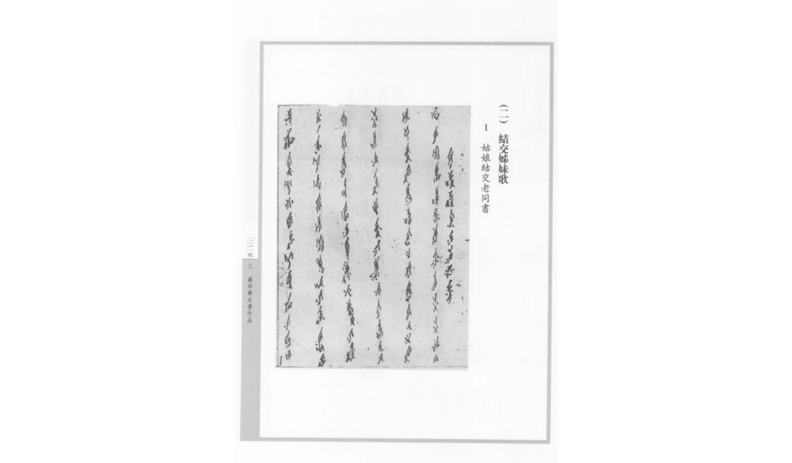
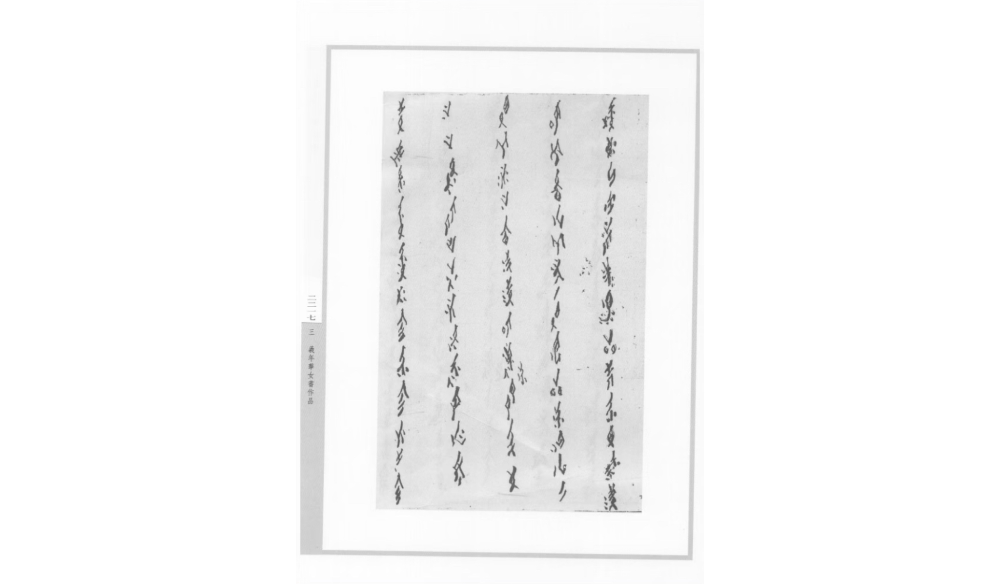
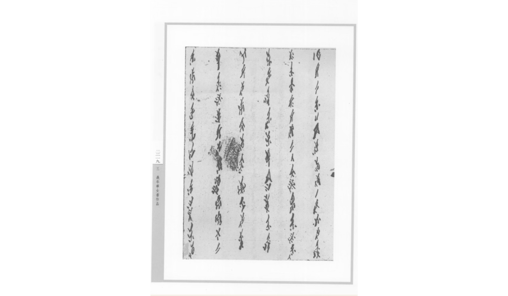
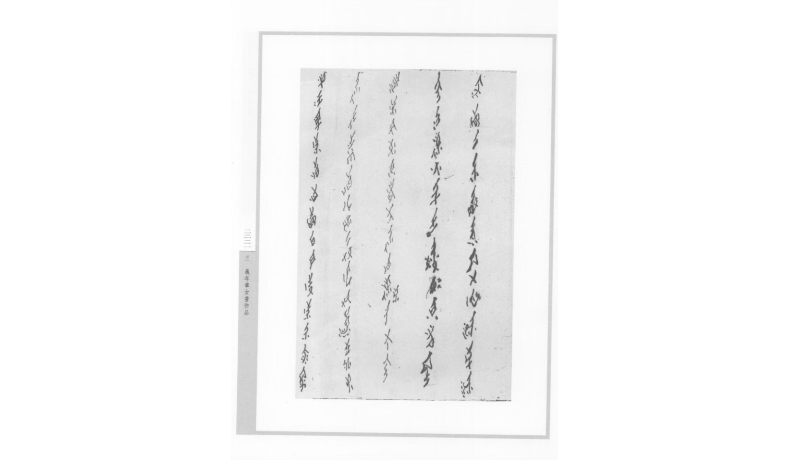
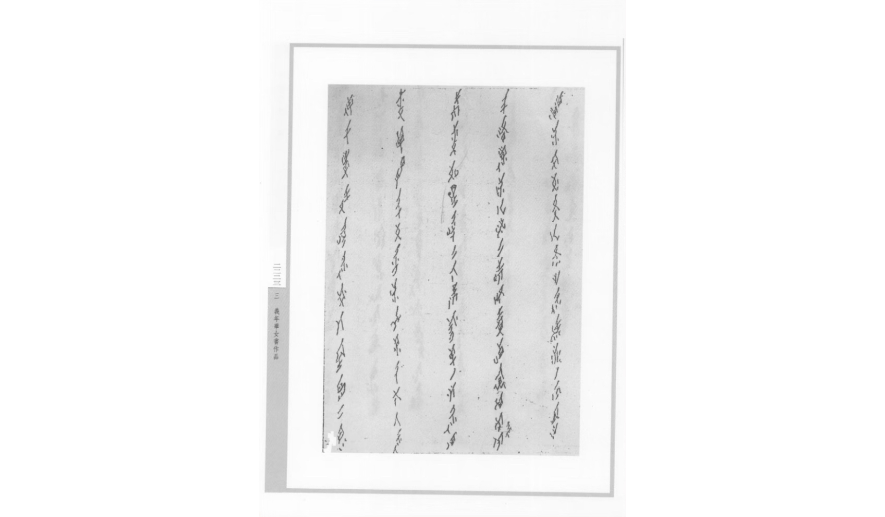
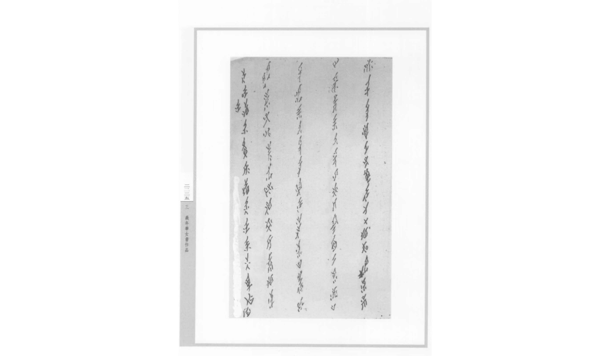
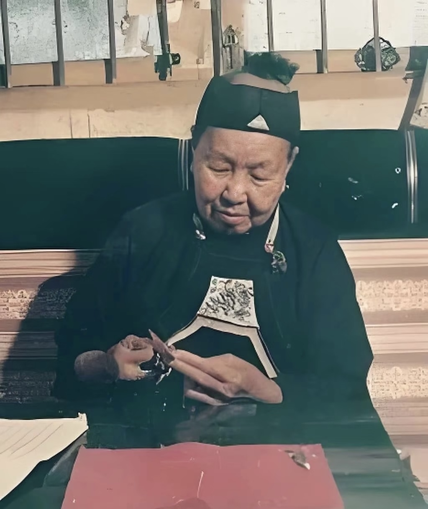

湖南江永的乡村里，曾有一群姐妹，用自己创造的文字，写下生活的悲欢、岁月的暖。那些婚嫁时赠予的“三朝书”，是她们互诉心事的密语，是分担苦难的依靠，是封建岁月里，悄悄筑起的温暖精神角落。通过几页书信，想邀你走进她们的故事，读懂文字里的深情，感受女性之间最坚韧的陪伴。
“与姊同书”取自《诗经》“与子同袍”的念想，只是把战场的并肩，换成了姐妹的同书 --“书”是悄悄写下的字，也是彼此诉说的情；“姊”是心照不宣的伴，也是代代相传的暖。这是属于“老同”（结拜姐妹）的私密约定，藏着最真挚的女性情谊。

译文: 新起围墙栽花树 海棠开开热水红 牡丹取齐折扇上 先奉知人你处开 石榴一双牡丹称 凤配金鸡天遇成 先奉吹凉到贵府 惊动姑娘一位芳 好恩结为东对了 不得力时相会芳 又妨我芳假相称 妨怕...

译文: 妨怕姑娘几样当 阳鸟闻声不见面 远听何歉好风光 一取良门家规好 二取风花你合时 世上聪明算开个 始我起心先送热 来问姑娘真不真 若是...

若是真心侬二位 八月神堂共一双 若是姑娘不嫌弃 侬就二人交过恩 不过我家难比你 家中贫寒不比芳 侬是结交同耍乐 正是楼中欢过时 侬是侬亲结为义 二位结交望长形 我到姨家同...

我到姨家同耍乐 二位坐齐知实心 粗字粗针到贵府 只望姑娘请谅宽 亲家舅娘请谅大 不比贵家礼义全 你在高堂好过日子 对龙对凤左右身 台到姨家同耍乐 曰起回家不舍离

亲家舅娘多好尽 算我红花一样陪 只妒贵家好过日子 孙曾满堂胜四边 老同娘边如珠宝 两个姑爷姊一个 你嘛楼中君子女 书家出身礼义人 我就千行难比你 姐守空房两朵花

只靠郎公刚强在 七十有余把家当 上无兄来下无弟 姐娘年轻守空房 上无倚来下无靠 常到姨家算解闷 眼前光辉容易过 台姐年高有字难 是望老同不嫌弃 接你到来开姐心

义年华是湖南江永上江圩桐口村人，1907年出生，是近代最具代表性的女书传承人之一，也是留存大量完整女书手抄本的民间女性。她一生饱尝孤苦，年轻时丈夫早早离世，无儿无女，孤身一人守着空房度日，常年依靠结拜姐妹（当地称为“老同”）互相慰藉、扶持。她自幼习得女书，一生写下数十本女书手稿，内容大多是写给结拜姐妹的书信、诉苦长歌、结交誓词。这份《姑娘结交老同书》，就是她亲手抄写流传下来的经典作品。
旧时江永女子不能入学读书，无法用汉字自由抒发内心，义年华便靠着女书，和一众结义姐妹搭建起只属于女性的精神世界。义年华中年丧夫，家中贫寒、无依无靠，正如她在自己写的女书歌谣里倾诉：“上无兄来下无弟，姐娘年轻守空房，上无倚来下无靠”。漫长孤寂的岁月里，阁楼、针线、女书是她全部的陪伴。每逢烦闷难熬，她就提笔写下长篇女书，寄给相隔各村的结拜姐妹，诉说独居的苦楚、对温暖陪伴的渴求。
她写下《姑娘结交老同书》，全篇以歌谣形式，细细诉说与姐妹结为老同的心愿：夸赞对方品性温良、家世和善，盼着八月一同到祠堂结拜，许下长久相伴的约定；她坦言自家清贫，生怕配不上对方，又满心期盼姐妹不要嫌弃自己，闲暇时常来家中相伴，排解独居苦闷。平日里，她与姐妹靠女书书信往来：走亲戚时写信分享见闻，受委屈时互写文字宽慰，逢年过节互赠写有女书的扇面、绢布。哪怕相隔数十里，一卷手写女书，就能把彼此的心事、温柔与共情传递过去。
晚年的义年华视力衰退、生活清贫，依旧坚持抄写女书。她把一生的委屈、温柔、女性之间独有的扶持情谊，全部留存进薄薄的纸页。她留下的手稿完整记录了旧时女性结拜“老同”的习俗，如今被收录进《中国女书合集》，成为研究女性情谊、民间女书文学最珍贵的实物史料。
义年华不只是女书的书写者，更是千万旧时底层女性的缩影：在男性主导、女性无处发声的年代，她依靠女书获得情绪出口，依靠同性之间的陪伴熬过孤苦一生，用文字留存下独属于女性之间纯粹、坚韧的羁绊。